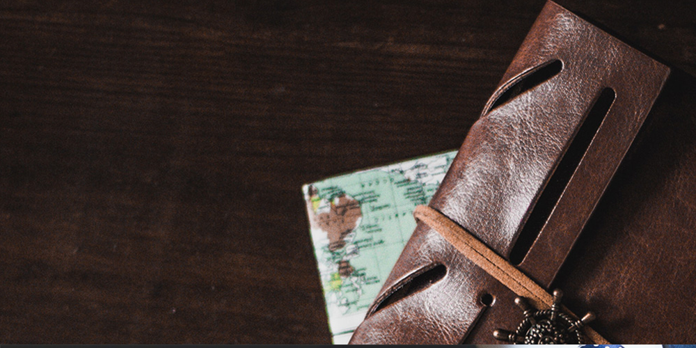

경영소개 Management
책임경영에 앞장서며 공생가치 창출을 위해 노력하고 있습니다
윤리헌장
주성은 기업윤리와 깨끗한 조직문화를 바탕으로 신기술개발과 "WORLD'S BEST PRODUCT" 실현을 통해 고객으로부터 신뢰를 받는 "WORLD'S BEST COMPANY"가 될 수 있다는 신념으로 전 임직원이 올바를 기업관을 공유하고 정도 경영을 실천하고자 "주성윤리강 령"을 제정하여 우리의 행동과 가치판단의 기준으로 삼아 성실히 준수하고 실천한다.
윤리규범 준수의무
- 01.우리는 고객만족을 최우선의 가치로 삼고 고객이 요구하는 최고의 가치(제품/서비스)를 창출하기 위해 최선을 다한다.
- 02.우리는 효율적인 경영을 통해 안정적인 수익실현으로 주주의 투자가치 증대를 위해 노력한다.
- 03.우리는 자유경쟁원칙과 공정거래원칙을 바탕으로 해당지역의 제반 법규와 거래관습을 존중하여 정당한 방법으로 경쟁우위를 확보하고, 공정하고 투명한 거래풍토를 조성하여 상호 신뢰 및 협력 관계하에 공존 및 공동발전을 위해 노력한다.
- 04.우리는 각자가 “주성의 주인이며, 주성을 대표한다”는 인식하에 긍지와 자부심을 가지고 도덕성과 예의범절을 생활화하여 명예와 품위를 지키며 정직하고 공정한 자세로 업무에 임하여 건전하고 깨끗한 기업문화 조성을 위해 노력한다.
- 05.우리는 임직원 개개인의 인간적 존엄성과 가치를 존중하여 각자의 자질과 능력에 따라 평등한 기회를 부여하고 공정한 평가를 통해 정당하게 보상하며 창의적이고 도전적인 인재를 육성하는 조직문화 구축을 위하여 노력한다.
- 06.우리는 국가와 사회의 가치관을 존중하고 제반 법규를 준수하며 건전한 기업활동을 통해 국가와 사회발전에 기여함으로써 기업의 사회적 책임을 다한다.
윤리강령
주성은 윤리·준법경영의 당위성을 인식하고, 윤리적·합법적으로 직무를 수행하여 공정한 거래질서 확립과 기업의 시대적 책임을 다함으로써 주성과 이해관계자 모두가 함께 성장하는 사회를 이루기 위하여 경영전반에 대한 기본 정신과 임직원들의 사고와 판단, 행동의 기준이 되는 윤리강령을 제정하고 그 실천을 다짐한다.
윤리활동 및 소식
-
- 윤리교육
- 신입/경력 사원 입사시 필수 교육과정으로 지정하여 체계적인 윤리교육 프로그램을 운영 중에 있습니다.
-
- 안주고 안받기 운동
- 깨끗한 기업문화를 조성을 위해 선물을 엄격하게 금지하고 있습니다
-
- IR 활동
- 투자자들에게알리고 실시간으로 경영 및 투자정보를IR 전용 홈페이지에 제공하는 등의 다양한 IR활동을 실시하고 있습니다.
공정거래 자율준수 경영
주성엔지니어링은 협력사와 상호 신뢰를 바탕으로 법률과 규정을 준수하고 공정한 거래의 모범 회사가 되고자합니다. 주성엔지니어링은 깨끗하고 투명한 거래 풍토 조성과 공정한 거래 질서를 바탕으로 상생 협력 및 동반 성장을 추구하기 위해 다음과 같이 공정거래 자율준수 경영을 추진합니다.
- 01.주성엔지니어링은 공정거래와 관련된 법규 및 사규를 명확히 숙지하고, 이를 자발적으로 실천한다.
- 02.주성엔지니어링은 모든 거래에 있어서 투명성을 바탕으로 공정한 참여 및 거래준수를 보장함으로써 상호 신뢰 관계를 구축한다.
- 03.주성엔지니어링의 선수들은 공정거래에 대한 자발적인 의식 확립으로 경영효율을 증진시키고 더 나아가 회사와 사회의 발전까지 기여한다.
- 04.주성엔지니어링은 기업의 안정과 성장을 지속적으로 발전시키기 위하여 자유롭고 공정한 경쟁을 도모한다.
하도급 거래 공정화 시스템 진단
- 01.지속적인 하도급 거래의 점검과 개선을 통한 준법 경영 및 윤리 경영 실현
- 02.협력사와의 상생 협력 및 동반 성장 시스템 강화
- 03.임직원의 투명하고 공정한 하도급 거래 관행 정착 및 준법경영을 위한 실행지침 제시
주성엔지니어링은 윤리경영 실천과 불합리한 제도 및 관행을 개선하기 위해 헬프라인을 운영하고 있습니다.
헬프라인